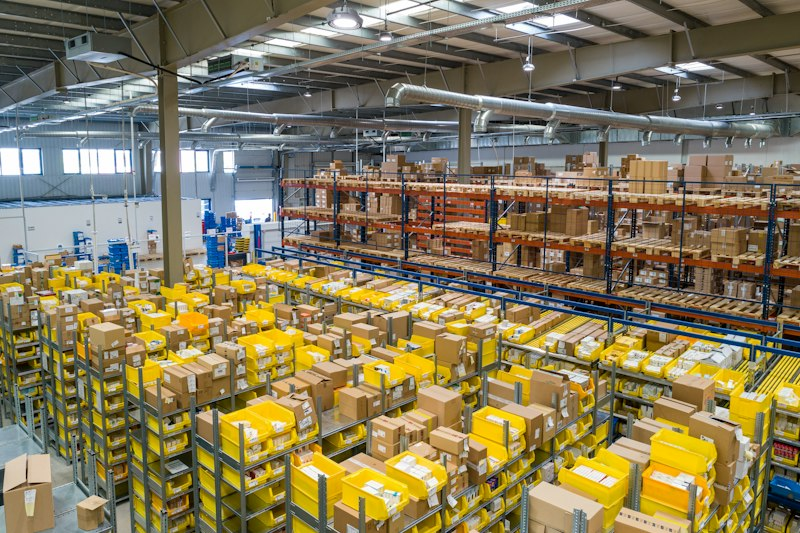

Acute Care Medical Centre
Clinical workflow zoning, sterile corridor separation, integrated medical gas infrastructure, and intuitive patient wayfinding.

Explore architectural work across different building types and design requirements. Each project reflects the importance of thoughtful planning, functional spaces, and design suited to its context.
Clinical workflow zoning, sterile corridor separation, integrated medical gas infrastructure, and intuitive patient wayfinding.

Specialized imaging suites, barrier-free mobility, calming daylight integration, and rapid ambulatory turnaround.

Private family dwelling tailored to solar orientation, cross-ventilation, central courtyard integration, and tactile finishes.

Multi-dwelling residential development engineered for floorplate efficiency, acoustic buffering, and secure communal circulation.
High-performance office tower designed for leasing versatility, efficient core placement, and climate-responsive glazing.

Ergonomic corporate interiors configured for agile teamwork, acoustic privacy zones, and modern digital infrastructure.

Resort pavilions harmonizing indoor-outdoor flow, shaded veranda walkways, guest privacy, and unobtrusive service circulation.

Specialty culinary venue planned for warm atmospheric lighting, acoustic comfort, back-of-house flow, and memorable guest hospitality.

High-capacity industrial plant engineered for heavy floor loads, crane clearances, streamlined assembly, and worker life safety.

Logistics facility optimized for high volumetric storage, heavy freight vehicle turning aprons, and automated handling.
Higher-education campus facility planned for high pedestrian volume, acoustic clarity in lecture theatres, and cross-ventilation.

Public community facility designed for universal barrier-free access, civic architectural presence, and multi-generational study.
Let’s discuss your requirements and explore the right architectural approach for your project.